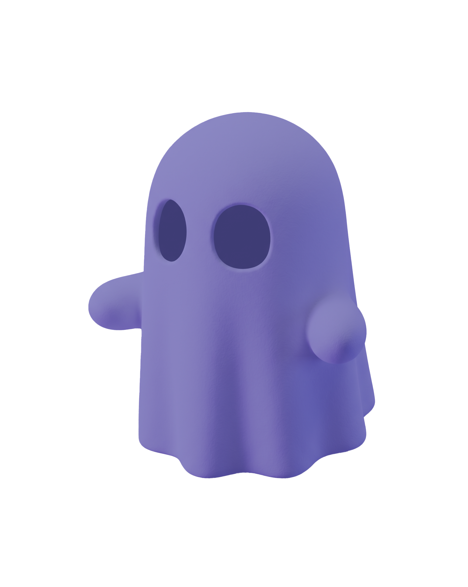
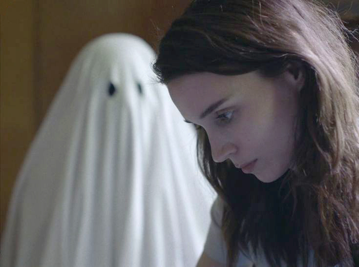

Гостинг
Значення:
«Гостинг» (від англійського ghost — привид) — це практика раптового припинення будь-якого спілкування та уникнення контактів з іншою людиною без видимого попередження, пояснення чи причини, ігноруючи всі наступні спроби зв'язатися.

Походження:
Термін виник у 2000-х роках, переважно в контексті побачень та романтичних стосунків, але тепер використовується і щодо дружби, а також у професійному середовищі (наприклад, коли потенційний працівник чи роботодавець раптово припиняє комунікацію).
Що робити, якщо тебе «загостили»?
Бути "загощеним" може бути болісним, викликати почуття розгубленості, гніву та сумніву у власній цінності. Ось кілька кроків, які можуть допомогти:
Усвідомте, що причина в емоційній незрілості людини, що зникла та, таким чином, уникнула відповідальності
Не шукайте для поведінки цієї людини виправдань. Відсутність пояснень — це і є її пояснення
Уникайте самозвинувачення та прийміть ситуацію. Нагадайте собі, що ви заслуговуєте на повагу та відверту комунікацію
Обмежте контакт: Заблокуйте або видаліть людину, якщо це допоможе вам не перевіряти її соцмережі та рухатися далі. Відсутність спокуси стежити за їхнім життям сприяє емоційному зціленню.
Займіться тим, що приносить вам задоволення та допоможе відновити емоційний ресурс: відпочиньте, зверніться по підтримку до своїх близьких